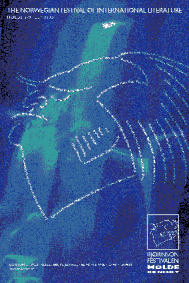

Festivalen har markert seg som en av Europas ledende litteraturfestivaler, og trekker årlig store nasjonale og internasjonale forfattere til Molde.
Dette dannet utgangspunktet for våre designere.Tidligere forfatternavn ble brukt til å tegne Bjørnsons berømte profil. Ved hjelp av grafiske virkemidler kommuniserer festivalen at den trekker samtidens beste forfattere til Molde - bokstavlig talt i Bjørnsons ånd. I tillegg formidler plakaten et annet vesentlig budskap innenfor litteraturen - nemlig at ord også kan danne visuelle inntrykk.